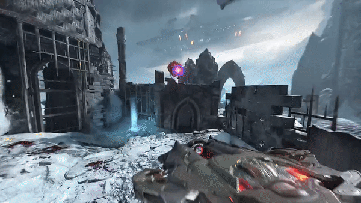

unlocked after E1M4 mission.
Has high damage with very little splash damage.
deals higher damage to flying enemies.
Arbalest: after a it hits target it deals big splash damage to all demons
best choise to kill flying enemies, most of them dies on first hit
Mastery: Instant Salvo: The Arbalest will recharge instantly after a direct hit.
Destroyer Blade: fires massive horizontal blade that deals propably the highest damage in-game
best choise for taking many enemies at once but cause of slow charging its very skill based
Mastery: Incremental Blade: Fire Destroyer Blades berofe they have reached maximum width.

The weapon of choice for Sentinel marksmen. It is said in Sentinel battle lore that a single battalion of archers defended the
walled city of IIkana for ten days and ten nights, armed only with their Ballistas. A precise weapon, the Ballista fires a twin beam of
superheated Argent, vaporizing its target on impact.